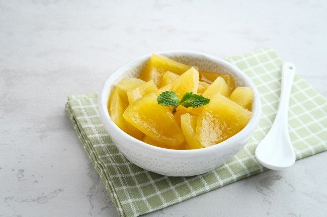
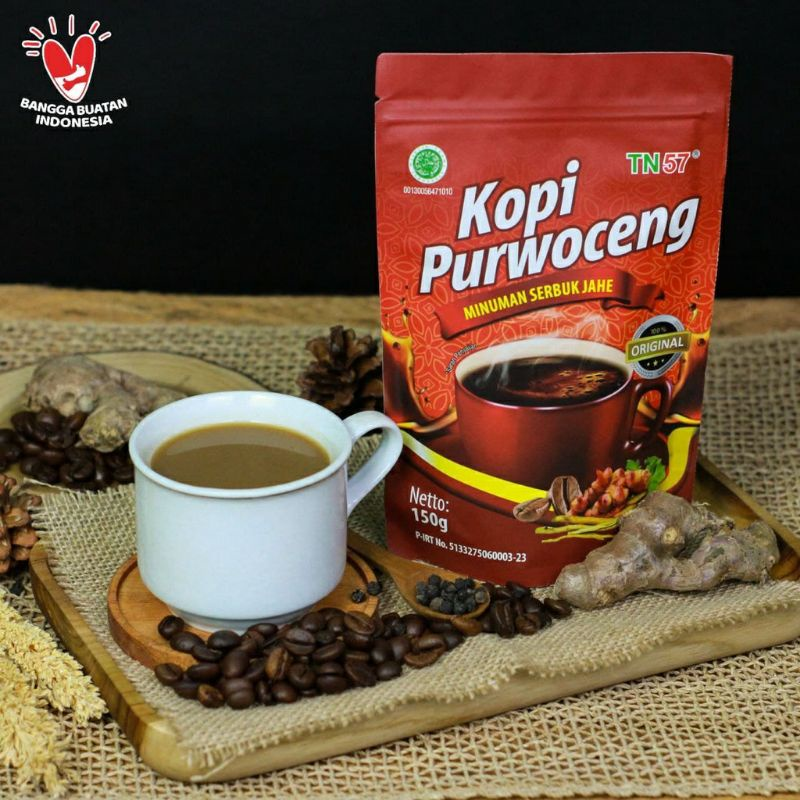

☕ Minuman Khas Wonosobo

Carica
Minuman segar dari buah carica khas Dataran Tinggi Dieng, diolah menjadi sirup atau manisan. Rasanya manis-asam yang unik dan menyegarkan, kaya vitamin A, C, dan E. Cocok disajikan dingin dengan es batu.

Sirup Terong Belanda
Olahan dari buah terong belanda (tamarilo) yang banyak dibudidayakan di dataran tinggi Wonosobo. Rasanya segar, kaya vitamin C dan antioksidan, sering dijadikan oleh-oleh khas Dieng.

Kopi Bowongso
Kopi Arabika khas Desa Bowongso di lereng Gunung Sumbing. Tumbuh di ketinggian 1.600–2.000 mdpl, dengan cita rasa seimbang: manis, asam, dan pahit lembut, serta aroma vanila dan tembakau.

Kopi Purwaceng
Kopi khas Wonosobo yang mengandung ekstrak akar purwaceng, dikenal sebagai minuman penghangat dan penambah stamina alami. Memiliki aroma kuat dan rasa khas rempah yang hangat.